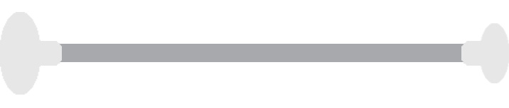

First, what is a baton???
A baton is essentially a hollow metal shaft with two rubber ends. One end is bigger than the other: the big end is called the ball, and the little end is called the tip.
Baton twirling is a sport and performing art involving the manipulation of a baton, such as by tossing and rolling it, in coordination with body movements such as dance and gymnastics. It is believed to have originated in Western Europe and Asia at festivals where performers twirled knives and sticks. From there, twirling made its way into army bands, where people would twirl maces, which were also used for conducting the bands. The maces evolved over time, becoming smaller, lighter, and better balanced to allow for twirlers to execute more intricate twirling moves!
During the 30's and 40's, twirling competitions developed in the United States, leading to the creation of national twirling organizations that still exist today, such as the National Baton Twirling Association (NBTA), created by Don Sartell.
Today, twirlers are still a part of marching bands, performing at pregames and halftimes and often referred to as majorettes. Many college marching bands have twirlers, sometimes known as feature twirlers, and some colleges have majorette lines, which are larger groups of twirlers performing in unison, sometimes in a more traditional style. College twirlers have the great opportunity to represent twirling in the public eye: many people don't realize that baton twirling has national and world-level competitions, but many people do attend football games! On that note, let's get into some of the details about what twirling looks like today
The Basics
The Thumb Toss:
The most central element in baton is called a thumb toss. The thumb toss is the primary technique used for throwing the baton in the air. To do a thumb toss, start by holding the baton parallel to the ground and to yourself, with your thumb in the center. Rotate your hand to the right until your palm is facing up, then let the baton roll over your thumb while pushing the baton up into the air.
Vertical / Horizontal patterns
There are two main "patterns" that you twirl in. Vertical pattern is the one you would most likely picture someone twirling in. This is where the baton is spinning perpendicular to the ground, so when you toss it you can see the whole baton rotating. Horizontal pattern is parallel to the ground, like a helicopter blade.
High Tosses
High tosses can be vertical or horizontal. The higher you're able to toss, the more you're able to do underneath the baton before it comes back down. It's important to make sure the baton is spinning with a good amount of revolutions so that it stays in the air longer, instead of just lofting it into the air, which will make it fall back faster.
Low flips / Contact material
Low flips are tricks that keep the baton relatively close to your body, not tossing the baton much higher than your head. A routine will typically have sections of low flips in between high toss tricks, and these low flips can involve very complex combinations of releases and catches and bodywork.
Rolls
Rolls are tricks where the baton is, surprise, surprise, rolling on some part of your body, typically on your arms or neck. These tricks are done without using your hands, so they require skill in handling your momentum and balance.
What do you do under a toss?
The possibilities are honestly endless! But the primary thing twirlers do under tosses is spin. Usually on your left foot, spinning to the left. The more advanced you are, the more spins you can execute under one toss. Typical advanced twirlers are able to spin 4 or 5 times under a toss.
You can also incorporate any kind of dance or gymnastics moves underneath a toss, like leaping or cartwheeling. However, it's important not to sacrifice the look of the dance or gymnastics move just to catch the baton; make sure you can still complete the move with good-looking bodywork while there's a baton in the air!
Illusions
Illusions are a type of dance move particulary popular in baton twirling. They involve rotating your body upside-down while keeping one foot on the ground and the other in the air, so that your legs hit a split while you're upside-down, and then you come back up to a standing position.